Taller de Micropython
Programación fácil y para todos de microcontroladores
Sin conocimientos previos
Ordenador obligatorio
Conexión WiFI
QR
{kind=link}
Kits de componentes
Simulador online
Hello world
Posibles problemas
🐧 GNU/Linux. No está en el grupo dialout o no están las reglas de udev (ver solución).
🪟 Windows y Mac. No están los drivers instalados (ver solución).
Sobre mí Nekmo

Programador Python |
Otras charlas...
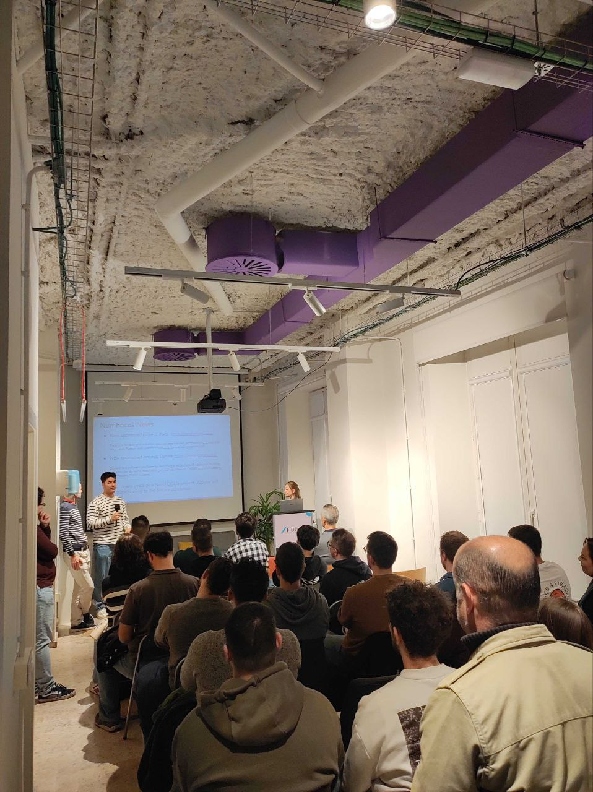{kind=link}

{kind=link}
{kind=link}
Microcontroladores
¿Qué son?
Ventajas
🤏 Pequeños
🤑 Económicos
🪫 Bajo consumo
Desventajas
🐢 Poco potentes
😓 Programación más compleja
Algunos usos
☁️ Domótica
🤖 Robótica
🔌 Electrónica
🚧 Prototipos
...
GIF robot
Variantes
ESP8266/ESP32
🤑 Muy económico
😄 Múltiples variantes
👥 Gran comunidad
Raspberry Pi Pico
💸 Económico
🔨 Gran soporte
📚 Bien documentado
ESP32
Dinero
Características
💪 Doble núcleo
🛜 Conectividad WiFi
📡 Conectividad Bluetooth
🔌 Múltiples pines GPIO
📟 ADC / DAC
Micropython
{kind=link}
Primeros pasos
⚡ Flashear siguiendo la web de Micropython
📝 IDE web (ViperIDE), local (Thonny) o esta presentación
▶️ Simulador online (Wokwi).
¿Por qué Micropython?
Ventajas
😄 Fácil de aprender
🚀 Prototipado rápido
🔋 Pilas incluidas
Desventajas
🐢 Más lento
📦 Menos módulos
📏 Menos memoria
Nos recolocamos
Lo básico de electrónica
⚡ La mayoría de los componentes son polarizados.
🌍 Todos los componentes deben ir a tierra (cable negro).
💡 Usar resistencias con los LED.
Protoboard
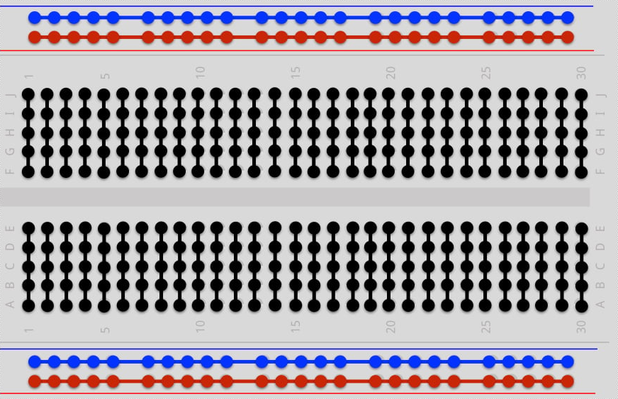{kind=link}
Avisos de seguridad
🚫 NUNCA cortocircuitar pines.
⚠️ CUIDADO con el pin de 5V.
👁️ Fijarse bien antes de conectar cables y componentes.
Demos
Encender un led
Identificar los pines
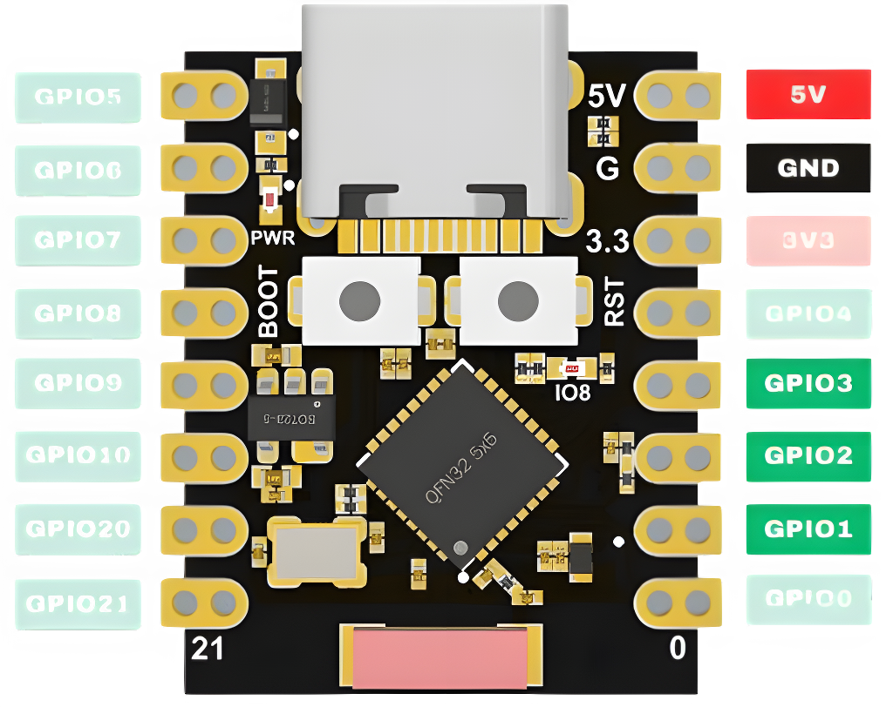{kind=link}
Conectar el led
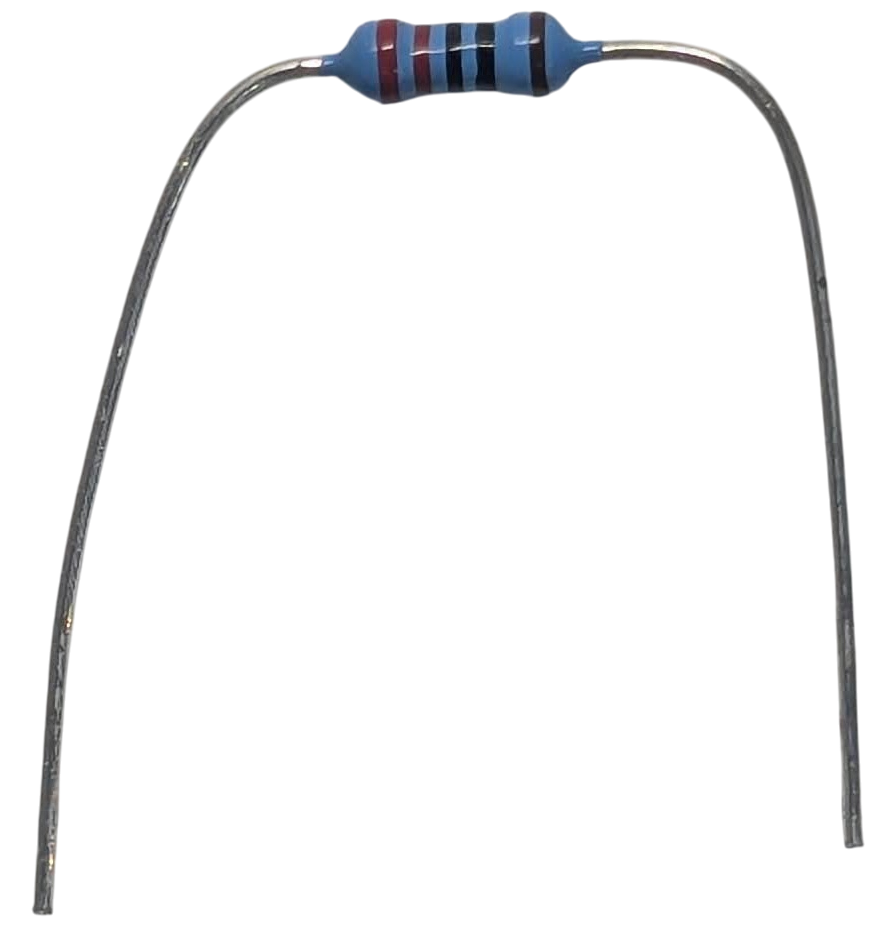 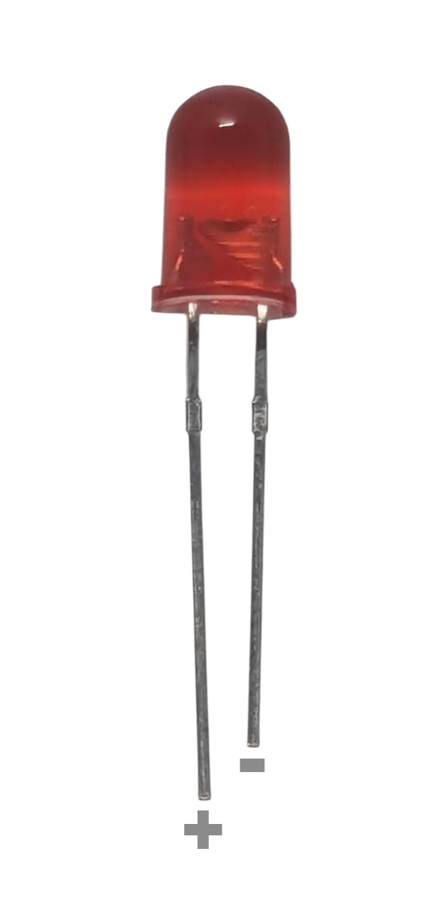{kind=link}
{kind=link}
Código led
LED analógico
Código led analógico
GIF luces LED
Conectar un botón
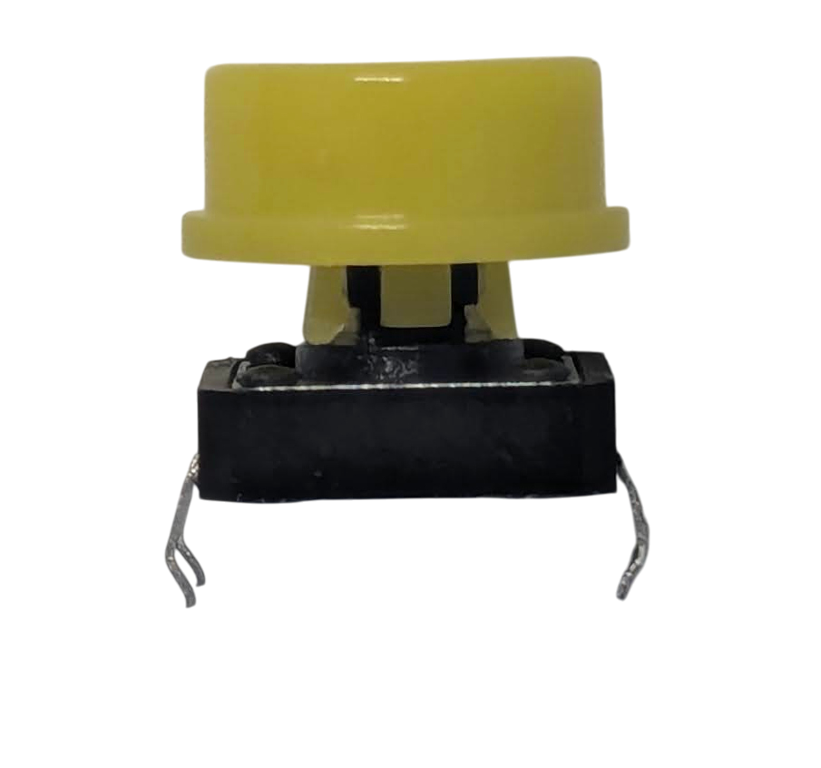{kind=link}
Código botón
GIF recreativa
Conectar un LED RGB
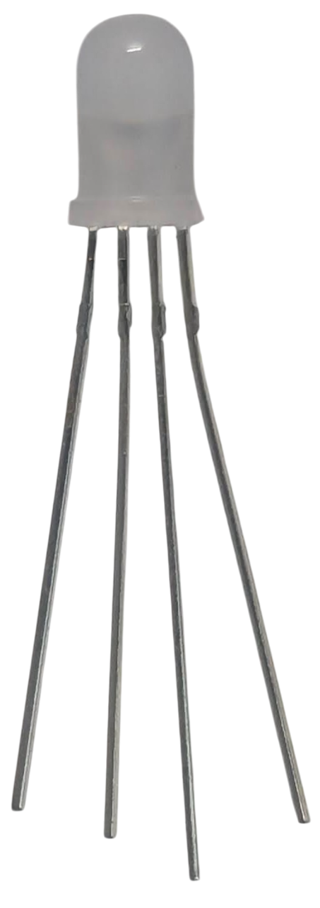{kind=link}
Código LED RGB
GIF cientos de cables
Protocolos de comunicación
1️⃣ OneWire (1 pin)
2️⃣ I2C (2 pines)
3️⃣ SPI (3/4+ pines)
📟 UART (2+ pines)
Conectar un led WS2812
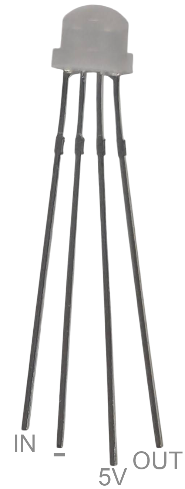{kind=link}
Código LED WS2812
I2C
Conectar sensor y pantalla I2C
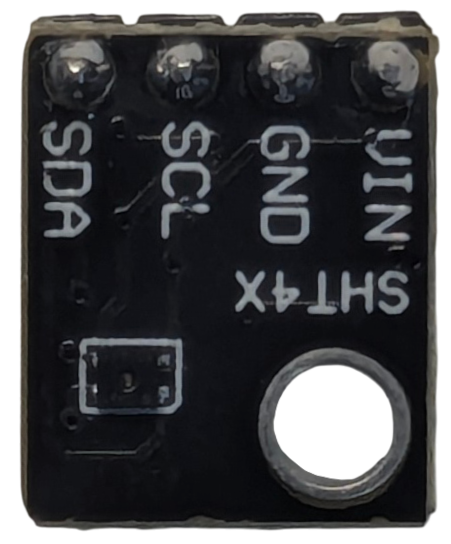 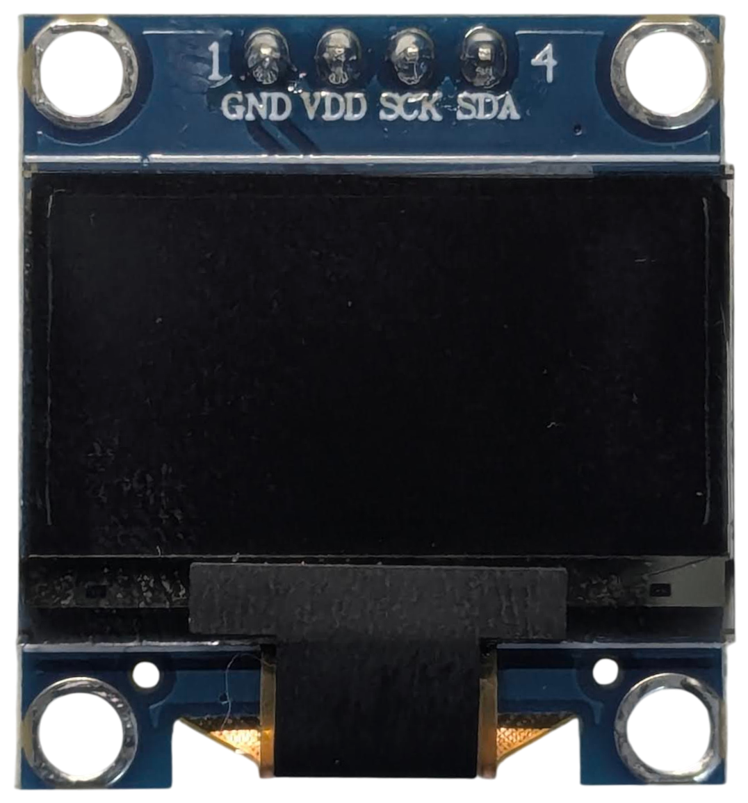{kind=link}
{kind=link}
Código sensor y pantalla I2C
WiFi y bluetooth
Código coche
Demo coche
¡Pruébalo tú mismo!
SSID: roverc.pro
Password: roverc.pro
Url: http://192.168.4.1
ESP-Now
Demo dron
¡Muchas gracias a todos!
Recursos
🌐 Web oficial: https://micropython.org
📝 Editor online: https://viper-ide.org
🥽 Simulador online: https://wokwi.com
Python Málaga
🌐 Sitio web: python-malaga.es.
🤝 Meetup: meetup.com/Python-Malaga.
🐦 Twitter: @python_malaga.
💼 LinkedIn: linkedin.com/groups/13110576.
📱 Telegram: python_malaga.
Contactar
🌐 Sitio web: nekmo.com
📫 Email: contacto@nekmo.com
🐦 Twitter: @nekmocom
📱 Telegram: @nekmo
💡 Jabber: nekmo@nekmo.org